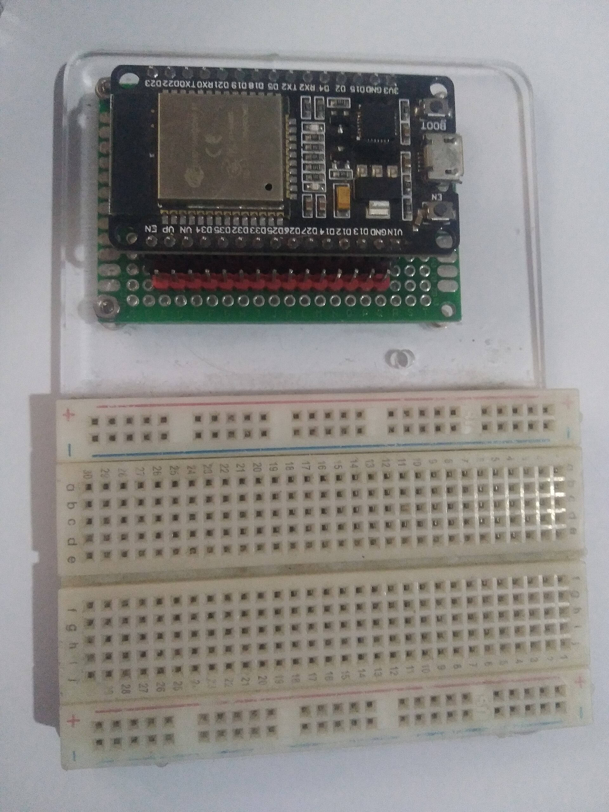
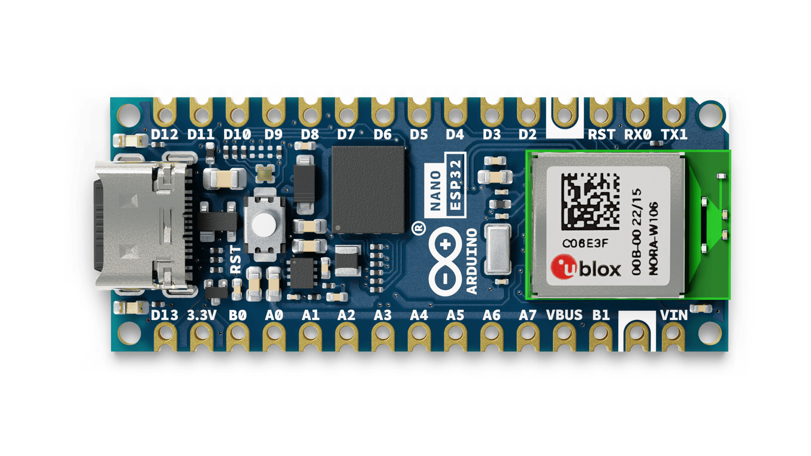
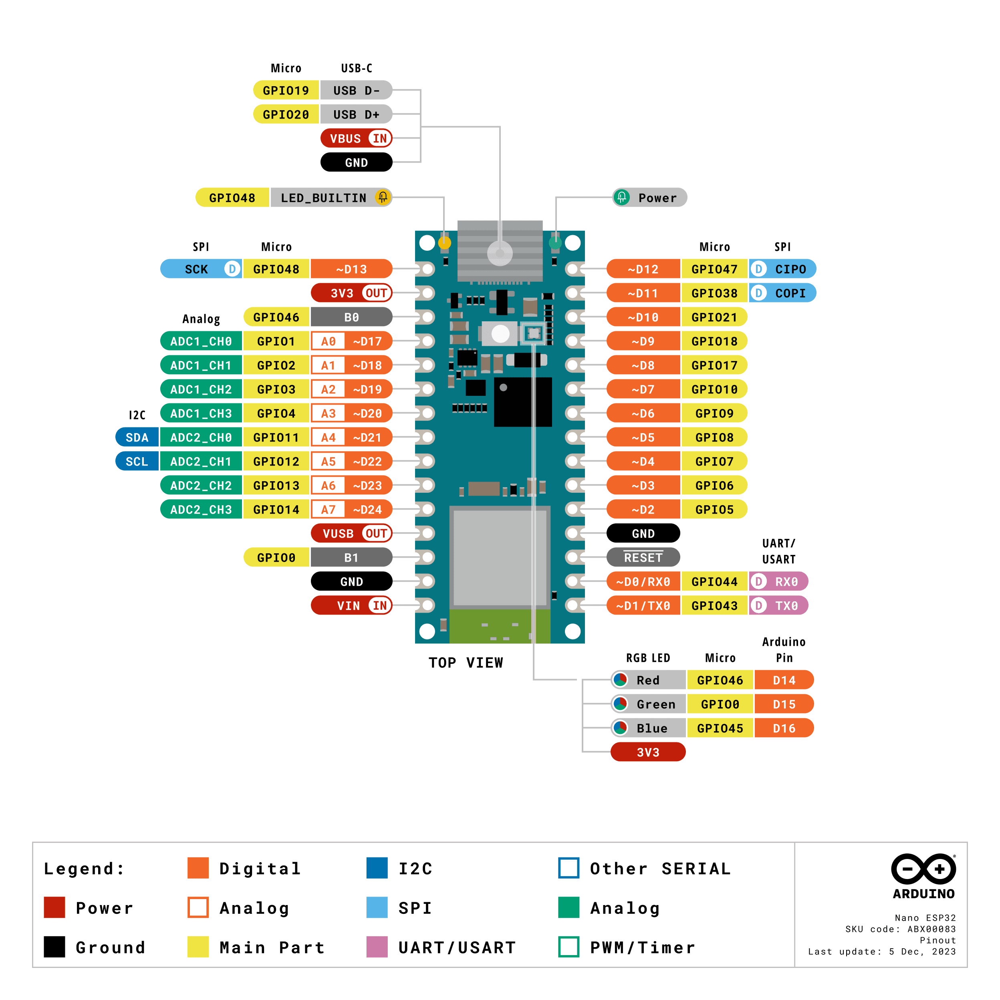
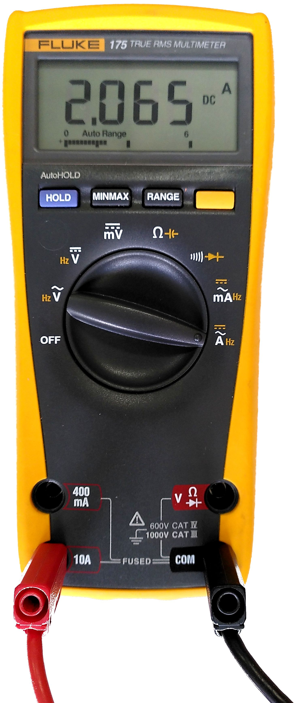
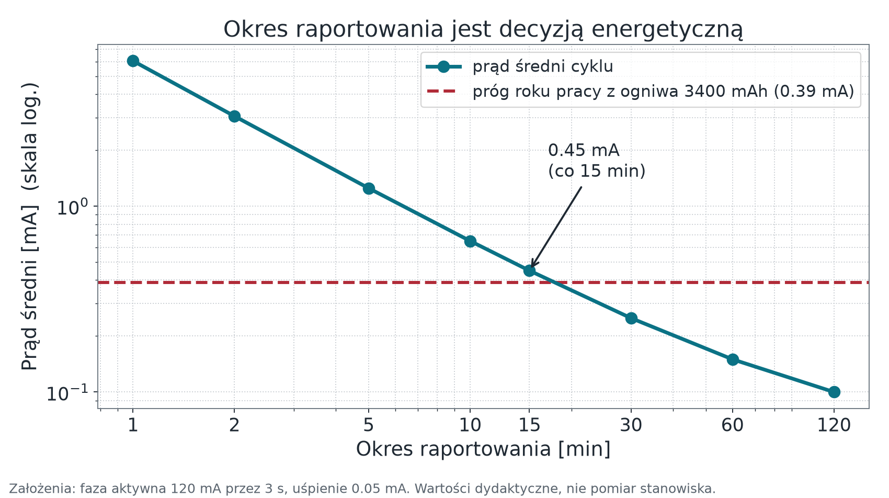

Urządzenie, sensory i energia
Wykład 2 — od wielkości fizycznej do wiarygodnej liczby
prof. UPP dr hab. inż. Marek Urbaniak
Wydział Inżynierii Środowiska i Inżynierii Mechanicznej
Uniwersytet Przyrodniczy w Poznaniu
Po co ten wykład
Pytanie modułu: skąd bierze się liczba, której zamierzamy zaufać — i ile energii kosztuje jej dostarczenie?
Cele
- Prześledzić łańcuch od wielkości fizycznej do wartości w komunikacie.
- Odróżnić rozdzielczość przetwornika od dokładności pomiaru.
- Zdefiniować stan bezpieczny wyjścia wykonawczego.
- Policzyć budżet energii zamiast powtarzać hasło „trzy lata na baterii”.
Droga
- Warstwa percepcji: czujniki i aktuatory
- Łańcuch pomiarowy i jego błędy
- Dwie płytki stanowiska — konkretne liczby
- Zasilanie, logika, prąd wyprowadzeń
- Budżet energii jako rachunek
Percepcja: zmysły i mięśnie
Fot. Aisart, CC BY-SA 3.0
Czym system „czuje”
- Wielkości mierzone: temperatura, wilgotność, natężenie światła, gazy (CO₂, VOC), ciśnienie, przyspieszenie i drgania, położenie.
- Podział ze względu na zasadę działania:
- generacyjne — same wytwarzają sygnał (termopara, piezo),
- parametryczne — zmieniają np. rezystancję i wymagają prądu pobudzenia (termistor, fotorezystor),
- aktywne w sensie teledetekcji — emitują falę i mierzą odpowiedź (ultradźwięki, lidar).
- Podział ze względu na wyjście:
- analogowe — napięcie do przetworzenia przez ADC,
- cyfrowe — gotowa wartość przez I²C, SPI lub 1-Wire.
Środowisko niszczy sprzęt
Drgania linii produkcyjnej rozerwą połączenie lutowane szybciej, niż zdezaktualizuje się jakikolwiek protokół. Zabrudzony czujnik to pierwszy powód fałszywych odczytów — wcześniejszy niż jakikolwiek błąd w kodzie.
Wybór cyfrowy zamiast analogowego przenosi kondycjonowanie i kalibrację do układu czujnika. Dla pomiarów o wymaganej dokładności to zwykle właściwa decyzja.
Łańcuch pomiarowy
Pięć ogniw. Błąd z kondycjonowania często ujawnia się dopiero przy walidacji.
Zasada kursu: wartość wysyłana do systemu ma jednostkę w nazwie pola (temperature_c) i nigdy nie jest surową liczbą z ADC. Przeliczenie wykonuje urządzenie, bo tylko ono zna swój układ wejściowy.
Rozdzielczość to nie dokładność
Rozdzielczość — liczba kroków, na jakie przetwornik dzieli zakres.
Dla 12 bitów i zakresu 3,3 V (rachunkowo; ADC ESP32-S3 mierzy efektywnie do ok. 2,9 V):
4096kroków (2¹²)
0,81 mVwartość jednego kroku (LSB)
To mówi, jak drobno odczytujemy — nie mówi, jak blisko prawdy jesteśmy.
Rozdzielczość przetwornika nie jest dokładnością pomiaru. Krok to 0,81 mV, a błąd przetwornika SAR w ESP32-S3 po kalibracji to według producenta ±50 mV — około 60 kroków. Gdy pomiar ma spełniać wymaganie dokładności, wybieramy czujnik z interfejsem cyfrowym zamiast walczyć z torem analogowym.
Dryft zera jest zjawiskiem, nie usterką. Zapisujemy datę kalibracji razem z wynikiem — inaczej po pół roku nie odróżnimy zmiany w świecie od zmiany w czujniku.
Aktuatory i pętla sterowania
- Elektryczne: przekaźniki półprzewodnikowe, serwomechanizmy, silniki krokowe, oświetlenie.
- Ciecze i gazy: elektrozawory nawadniania, upusty ciśnienia.
- Pętla: pomiar → decyzja → akcja → ponowny pomiar potwierdzający skutek.
Ostatnie ogniwo bywa pomijane. Bez niego nie wiemy, czy wyjście faktycznie zadziałało — wiemy tylko, że wysłaliśmy polecenie.
Ryzyko twarde
Jeśli uszkodzony termistor zgłosi fałszywy mróz, system w dobrej wierze załączy grzałkę. Błąd warstwy percepcji zamienia się w skutek fizyczny — dlatego walidacja zakresu należy do urządzenia, a nie dopiero do chmury.
Stan bezpieczny wyjścia
Definiujemy go przed implementacją, bo „bezpieczny” znaczy co innego dla każdego wyjścia.
| Wyjście | Stan bezpieczny |
|---|---|
| pompa nawadniająca | wyłączona |
| zawór odcinający gaz | zamknięty |
| oświetlenie drogi ewakuacyjnej | załączone |
| siłownik przepustnicy | ostatni stan |
Nie ma jednej odpowiedzi — jest decyzja projektowa, którą trzeba zapisać.
Trzy zdarzenia do przetestowania
- Reset procesora — stan pinu po resecie opisuje datasheet, ale to nie jest nasz stan bezpieczny, a przy starcie zdarzają się krótkie impulsy. Stan bezpieczny gwarantuje sprzęt (rezystor ściągający na wejściu stopnia mocy); firmware ustawia go jawnie przed inicjalizacją Wi-Fi.
- Zanik i powrót zasilania — urządzenie startuje w stanie bezpiecznym i nie wykonuje zaległego polecenia.
- Utrata łączności dłuższa niż tolerancja — przejście do stanu bezpiecznego jest wymaganiem, nie efektem ubocznym.
Watchdog ma prowadzić do stanu bezpiecznego, a nie tylko restartować pętlę główną.
Płytki stanowiska
Fot. wdwd, CC BY-SA 4.0
Klasy platform — i po co je rozróżniać
Mikrokontroler (MCU)
Brak systemu operacyjnego albo RTOS. Pobór liczony w mikroamperach w uśpieniu. Rola: węzeł pomiarowo-wykonawczy.
System on Chip z radiem
MCU z Wi-Fi i Bluetooth LE w jednym układzie. To klasa obu płytek naszego stanowiska.

Fot. Edwiyanto, CC BY-SA 4.0
Komputer jednopłytkowy (SBC)
Pełny system operacyjny, stałe zasilanie. Rola: brzeg sieci — broker, Node-RED, bufor.

Raspberry Pi 4. Fot. Laserlicht, CC BY-SA 4.0
Nano ESP32 ma Wi-Fi oraz Bluetooth LE na płytce. Raspberry Pi należy do innej klasy urządzeń; kryterium wyboru stanowią rola w architekturze i budżet energii, a nie etykieta „nowoczesności”.
„ESP32” to rodzina, nie układ
Trzy układy z tej rodziny, które spotkamy w materiałach — i dlaczego nie są zamienne.
| ESP32 (oryginalny) | ESP32-S3 | ESP32-C3 | |
|---|---|---|---|
| Rdzeń | Xtensa LX6, 2 rdzenie | Xtensa LX7, 2 rdzenie, do 240 MHz | RISC-V, 1 rdzeń, do 160 MHz |
| Na naszym stanowisku | — | Arduino Nano ESP32 | M5Stack Stamp-C3U |
| Konsekwencja | — | inna numeracja pinów i inne peryferia niż oryginalny ESP32 | inna architektura — inny łańcuch narzędzi i inne warianty bibliotek |
Co z tego wynika w praktyce
Numery GPIO, dostępność ADC i gotowe biblioteki nie przenoszą się automatycznie między tymi układami ani z ESP8266 czy UNO. Każde przeniesienie układu wymaga jawnego mapowania pinów i ponownego testu.
Arduino Nano ESP32 (ABX00083)

Materiał Arduino, licencja CC BY-SA 4.0.
ESP32-S3w module u-blox NORA-W106-10B
3,3 Vlogika wszystkich wyprowadzeń
| Parametr | Wartość | Znaczenie w projekcie |
|---|---|---|
| Pamięć | 512 kB SRAM, 16 kB SRAM w RTC | bufory JSON i TLS liczymy w kilobajtach |
| PSRAM / flash | 8 MB PSRAM, 16 MB flash | flash mieści dwie partycje aplikacji dla OTA |
| Zasilanie | USB-C 4,8–5,5 V albo VIN 6–21 V | brak osobnego pinu 5 V na listwie |
| Radio | Wi-Fi 2,4 GHz, Bluetooth LE | brak pasma 5 GHz — punkt dostępowy musi dawać 2,4 GHz |
| Uśpienie | 7 µA deep sleep, 240 µA light sleep | dane samego układu SoC, nie płytki |
| Temperatura | −40…+65 °C (moduł z 8 MB PSRAM) | instrukcja Arduino podaje więcej — wiążący jest moduł u-blox |
Nano ESP32 — co jest na listwie

Ryc. — oficjalny pinout ABX00083 (aktualizacja 5.12.2023). Źródło: docs.arduino.cc, CC BY-SA 4.0.
| Grupa | Na płytce | ESP32-S3 | Uwaga praktyczna |
|---|---|---|---|
| Wejście zasilania | VIN | — | 6–21 V, typowo 7 V |
| 5 V | VBUS (opis VUSB) | — | tylko przy zasilaniu z USB-C |
| Wyjście 3,3 V | 3V3 | — | zarazem napięcie logiki GPIO |
| GPIO cyfrowe | D2–D13 | 5–10, 17, 18, 21, 38, 47, 48 | D13 to także LED_BUILTIN |
| UART0 | D0/RX0, D1/TX0 | 44, 43 | linia TX0 ma szeregowy rezystor 499 Ω |
| I²C | A4 = SDA, A5 = SCL | 11, 12 | te same piny co ADC2_CH0/CH1 |
| SPI | D13/D12/D11 | 48, 47, 38 | linię CS wybiera program |
| ADC tor 1 | A0–A3 | 1–4 | pin znosi 3,3 V, pomiar do ok. 2,9 V |
| ADC tor 2 | A4–A7 | 11–14 | współdzielone z I²C i z Wi-Fi — odczyt może się nie udać |
| Piny strapping | B0, B1, A2 | 46, 0, 3 | stan przy resecie wybiera tryb rozruchu |
M5Stack Stamp-C3U (SKU C122-B)
Druga płytka stanowiska. Nie mylić ze Stamp-C3 — różnice są praktyczne, nie kosmetyczne.
ESP32-C3RISC-V, 1 rdzeń, do 160 MHz
400 kBSRAM · 4 MB flash
- Wi-Fi 2,4 GHz 802.11 b/g/n oraz Bluetooth LE, antena 3D.
- Zasilanie modułu 5 V / 500 mA; przetwornica 5 V → 3,3 V jest na płytce.
- Logika wyprowadzeń 3,3 V — tak samo jak w Nano ESP32.
- Wymiary 34,0 × 20,0 × 4,6 mm; montaż SMT, DIP albo przewodami.
- Sprzętowo: secure boot, szyfrowanie pamięci flash, podpis cyfrowy.
Nie mylić zasilania z logiką
5 V zasila płytkę. Linie GPIO pracują z 3,3 V i podanie na nie 5 V grozi trwałym uszkodzeniem układu. Czujnik 5 V podłączamy przez konwerter poziomów, nigdy „na skróty”.
Rysunki producenta
Zdjęcie płytki i oficjalna mapa wyprowadzeń: docs.m5stack.com/en/core/stamp_c3u.
Tabela na następnym slajdzie zestawia najważniejsze różnice na podstawie dokumentacji producenta.
Stamp-C3 a Stamp-C3U — gdzie leży różnica
| Cecha | Stamp-C3 (C056-B) | Stamp-C3U (C122-B) — nasza płytka | Uwaga praktyczna |
|---|---|---|---|
| Liczba GPIO na listwie | 13 | 14 | cała różnica to dodatkowe wyprowadzenie G3 |
| Skrajny górny pin lewej listwy | GND | G3 | ten sam fizyczny otwór, inna funkcja — sprawdź nadruk |
| Komunikacja z komputerem | przez układ CH9102 | wbudowany USB-Serial/JTAG układu ESP32-C3 | C3 wymaga sterownika; w C3U włącz USB CDC On Boot, inaczej Serial nie wyjdzie przez USB |
| USB | G18 = D−, G19 = D+ + CH9102 | G18 = D−, G19 = D+, bez pośrednika | — |
| Przycisk użytkownika | G3 (nie na listwie) | G9 (na listwie, pin strapping) | przytrzymanie G9 przy zasilaniu → tryb wgrywania |
| Wejścia analogowe | G0, G1, G4, G5 | G0, G1, G3, G4, G5 | G0–G4 to tor ADC1; G5 to ADC2 — na C3 niestabilny, nie używać |
| Masa | GND × 4 | GND × 3 | konsekwencja wyprowadzenia G3 |
| Piny strapping | G2, G8, G9 | G2, G8, G9 | na listwie dostępne G8 i G9 |
Stamp-C3 i Stamp-C3U nie różnią się liczbą sprzętowych UART układu ESP32-C3. Istotne różnice to mostek CH9102 wobec natywnego USB-Serial/JTAG, jedno dodatkowe GPIO i położenie przycisku.
Piny strapping — zanim podłączysz
Po każdym resecie układ odczytuje poziomy na kilku wyprowadzeniach i dopiero na tej podstawie wybiera tryb rozruchu.
| Układ | Piny strapping | Na listwie |
|---|---|---|
| ESP32-S3 (Nano ESP32) |
GPIO0, GPIO3, GPIO45, GPIO46 | B1, A2, B0 (GPIO45 niewyprowadzony) |
| ESP32-C3 (Stamp-C3U) |
GPIO2, GPIO8, GPIO9 | G8, G9 (G2 steruje diodą RGB) |
Za dokumentacją Espressif ESP-IDF, „GPIO & RTC GPIO”.
Wniosek praktyczny
Te wyprowadzenia zostawiamy wolne albo podłączamy do nich układy, które w chwili startu są w stanie wysokiej impedancji (wyjątek: GPIO3 w S3 przy ustawionym eFuse JTAG).
Przycisków i czujników z twardym stanem początkowym tam nie wieszamy — objaw wygląda jak „płytka nie startuje”, a przyczyną jest element trzymający pin przy masie.
Ćwiczenie z czytania dokumentacji
Tabela specyfikacji Stamp-C3U u producenta wymienia wyprowadzenie „G22”. Układ ESP32-C3 kończy numerację na GPIO21, a oficjalna mapa wyprowadzeń pokazuje w tym miejscu G20 (Rx0). Przy dwóch sprzecznych zapisach u tego samego producenta wybieramy ten, który da się sprawdzić na płytce.
Prąd wyprowadzenia: limit, nie prąd pracy
Instrukcja Arduino dla ABX00083 podaje wydajność prądową pinu:
40 mAprąd źródłowy
28 mAprąd odbiornikowy
W datasheecie ESP32-S3 to wartości typowe, przy maksymalnej sile wyjścia i spadku napięcia do 2,64 V — domyślna siła wyjścia w ESP-IDF jest niższa.
Obciążenia indukcyjne — przekaźnik, zawór, silnik — zawsze przez stopień mocy z diodą gaszącą i osobnym zasilaniem.
Granica, nie punkt pracy
40 mA to wydajność w warunkach katalogowych — nie prąd, na który wolno projektować. Dobieramy obciążenie z zapasem i uwzględniamy warunki elektryczne układu.
Energia
Fot. Mk2010, CC BY-SA 3.0
Deep sleep — na czym polega kompromis
- Moduł Wi-Fi pobiera przy nadawaniu szczytowo ponad 300 mA, średnio ok. 100 mA, przez kilka sekund wyszukiwania sieci i zestawiania połączenia.
- Paradygmat: obudź się → zmierz → nadaj → uśpij, wszystko w ułamku sekundy.
- W deep sleep procesor odcina sobie zasilanie, zostawiając minimalny zegar RTC do wybudzenia.
- Pojemność ogniw od 1991 r. wzrosła ok. trzykrotnie; pobór w uśpieniu spadł o kilka rzędów wielkości. Postęp dało przede wszystkim zarządzanie poborem.
Dane katalogowe a cała płytka
Wartości 7 µA i 240 µA z dokumentacji dotyczą samego układu ESP32-S3 (z 8 MB PSRAM light sleep to ok. 380 µA). Dioda zasilania, przetwornica i pamięci podnoszą pobór seryjnej Nano ESP32 w deep sleep do ok. 2 mA.
Budżet energii liczymy z pomiaru na stanowisku; dane katalogowe służą do sprawdzenia, czy pomiar jest sensowny.

Pomiar prądu multimetrem. Fot. Christiankral, CC BY 4.0
Budżet energii to rachunek, nie hasło
Dla cyklu o okresie \(T\) z czasem aktywności \(t\):
\[I_{\text{śr}} = \frac{I_{\text{akt}} \cdot t + I_{\text{sleep}} \cdot (T-t)}{T}\]
\[Q_{\text{wym}} = I_{\text{śr}} \cdot t_{\text{życia}}\]
Przykład dydaktyczny — pomiar co 15 min, faza aktywna 3 s przy 120 mA (Wi-Fi + TLS + publikacja), uśpienie płytki zoptymalizowanej (własne PCB) 0,05 mA; prąd liczony po stronie ogniwa, sprawność przetwornicy pominięta:
0,45 mAprąd średni
3,94 Ahna rok pracy
Jak czytać wzór
Faza aktywna trwa sekundy, ale przy 120 mA dominuje w średniej. Uśpienie trwa prawie cały okres — więc jego prąd decyduje, gdy okres jest długi.
Ile wytrzyma ogniwo?

Płytka zoptymalizowana: ogniwo 18650 (≈3400 mAh) wystarczy na około 10 miesięcy; rok osiągniemy przy okresie ok. 18 min lub dłuższym.
≈ 10 mies.płytka zoptymalizowana, co 15 min
≈ 2 mies.seryjna Nano ESP32 (2 mA w uśpieniu)
Wniosek dla stanowiska
Seryjna płytka zużywa ogniwo w ok. 2 miesiące prawie niezależnie od okresu — liczy się uśpienie, nie raportowanie. CR2032 odpada: nie dostarczy szczytowego prądu Wi-Fi.
Okres raportowania jest decyzją
Ten sam czujnik, ta sama bateria, płytka zoptymalizowana (0,05 mA w uśpieniu) — a czas pracy różni się o rząd wielkości.
| Okres raportowania | Prąd średni | Czas z ogniwa 3400 mAh |
|---|---|---|
| co 1 min | 6,05 mA | ok. 23 dni |
| co 5 min | 1,25 mA | ok. 3,7 miesiąca |
| co 15 min | 0,45 mA | ok. 10 miesięcy |
| co 30 min | 0,25 mA | ok. 1,6 roku |
| co 60 min | 0,15 mA | ok. 2,6 roku |
Pytanie projektowe nie brzmi „jak często możemy mierzyć”, tylko „jak rzadko wystarczy, żeby decyzja z modułu 01 nadal była podejmowana na czas”.
Pytania sprawdzające
- Zespół podłączył przekaźnik bezpośrednio do pinu cyfrowego Nano ESP32, argumentując: „cewka bierze 35 mA, a limit to 40 mA”. Wymień dwa niezależne powody, dla których to złe rozwiązanie.
- Czujnik wysyła
temperature: 512. Odbiorca wyświetla 512 °C. W którym ogniwie łańcucha pomiarowego leży błąd i jaka zasada kursu została złamana? - System ma raportować co 5 minut i pracować rok z ogniwa 3400 mAh. Z tabeli wynika, że to niewykonalne przy założonej fazie aktywnej. Podaj dwie różne zmiany projektowe, z których każda samodzielnie zbliża do celu, i powiedz, co każda kosztuje.
Podsumowanie i przejście
Co zostaje z tego modułu
- Wartość wysyłana do systemu ma jednostkę w nazwie i jest przeliczona przez urządzenie.
- Rozdzielczość ADC nie jest dokładnością pomiaru.
- Stan bezpieczny wyjścia to decyzja zapisana przed implementacją i sprawdzana w trzech scenariuszach.
- 40 mA na pinie to wydajność katalogowa, nie prąd pracy.
- Okres raportowania jest decyzją energetyczną — i da się ją policzyć.
Moduł 03 — łączność i OTA
Urządzenie potrafi już zmierzyć i zareagować. Teraz musi utrzymać łącze, podnosić się po awarii sieci i dać się zaktualizować zdalnie bez ryzyka, że przestanie się uruchamiać.
Źródła
- Arduino, Nano ESP32 User Manual / Datasheet (SKU ABX00083) — rozdziały Features, Recommended Operating Conditions, Pin Voltage, VIN Rating, VBUS, Pin Current: https://docs.arduino.cc/resources/datasheets/ABX00083-datasheet.pdf
- Arduino, strona produktu i pinout Nano ESP32: https://docs.arduino.cc/hardware/nano-esp32/
- u-blox, moduł NORA-W10 series (NORA-W106-10B): https://www.u-blox.com/en/product/nora-w10-series
- M5Stack, dokumentacja Stamp-C3U (SKU C122-B): https://docs.m5stack.com/en/core/stamp_c3u oraz Stamp-C3 (C056-B): https://docs.m5stack.com/en/core/stamp_c3
- Espressif, ESP32-S3 Datasheet v2.2 — charakterystyki DC, ADC, pobór prądu: https://documentation.espressif.com/esp32-s3_datasheet_en.pdf
- u-blox, NORA-W10 Data Sheet — zakres temperatur modułu: https://content.u-blox.com/sites/default/files/documents/NORA-W10_DataSheet_UBX-21036702.pdf
- Espressif, ADC Oneshot Mode dla ESP32-S3 i ESP32-C3: https://docs.espressif.com/projects/esp-idf/en/stable/esp32s3/api-reference/peripherals/adc/adc_oneshot.html
- Espressif, Sleep Modes: https://docs.espressif.com/projects/esp-idf/en/stable/esp32s3/api-reference/system/sleep_modes.html
- Espressif, GPIO & RTC GPIO — piny strapping dla ESP32-S3 i ESP32-C3: https://docs.espressif.com/projects/esp-idf/en/stable/esp32s3/api-reference/peripherals/gpio.html
- Pomiary poboru seryjnej Nano ESP32 w deep sleep (społeczność): https://forum.arduino.cc/t/power-hungry-in-deep-sleep/1204775
Internet Rzeczy · Wykład 2 — Urządzenie, sensory i energia